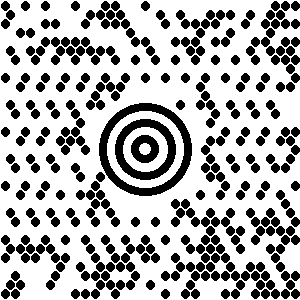

|
Zint Barcode Generator |
||
|---|---|---|
Also known as Semacode this symbology was developed in 1989 by Acuity CiMatrix in partnership with the US DoD and NASA. The symbol can encode a large amount of data in a small area. Zint supports all versions of the standard from ISO 16022 as shown in the following table. ECC200 uses Reed-Solomon error correction and is recommended for new applications. The different modes are accessed using the mode= option or by setting option_1.
|
Input |
Mode |
Error Correction Capacity |
Recovery Capacity |
|
1 (default) |
ECC 200 |
28 - 62% |
30 - 40% |
|
2 |
ECC 000 |
0% |
0% |
|
3 |
ECC 050 |
25% |
2.8% |
|
4 |
ECC 080 |
33% |
5.5% |
|
5 |
ECC 100 |
50% |
12.6% |
|
6 |
ECC 140 |
75% |
25% |
Also known as Quick Response Code this symbology was developed by Denso. QR Code support in Zint relies on libqrencode (version 2.0.0 or later) which is available from http://megaui.net/fukuchi/works/qrencode/index.en.html. Support for QR Code through libzint means that developers only need to write handlers for one API which covers QR Code as well as all of the other code symbologies provided by libzint. Four levels of error correction are available using the security= option or setting option_1 as shown in the following table.
|
Input |
ECC Level |
Error Correction Capacity |
Recovery Capacity |
|
1 |
L (default) |
Approx 20% of symbol |
Approx 7% |
|
2 |
M |
Approx 37% of symbol |
Approx 15% |
|
3 |
Q |
Approx 55% of symbol |
Approx 25% |
|
4 |
H |
Approx 65% of symbol |
Approx 30% |
The size of the symbol can be set by using the vers= option or setting option_2 to the QR Code version required (1-40). The maximum capacity of a (version 40) QR Code symbol is 7089 numeric digits, 4296 alphanumeric characters or 2953 bytes of data.
5.6.3 Micro QR Code (ISO 18004)
A miniature version of the QR Code symbol for short messages. ECC levels can be selected as for QR Code (above). Micro QR Code support does not require libqrencode.
Developed by UPS the Maxicode symbology employs a grid of hexagons surrounding a 'bulls-eye' finder pattern. This symbology is designed for the identification of parcels. Zint encodes Maxicode symbols in Mode 2 or Mode 3 depending on the postcode data entered. In these modes Maxicode symbols are composed of two parts named the primary and secondary messages. The primary message consists of a structured data field which includes various data about the package being sent, the secondary message usually consists of address data in a data structure. The format of the primary message is given in the following table:
|
Characters |
Meaning |
|---|---|
|
1-9 |
Postcode data which can consist of up to 9 digits (for mode 2) or up to 6 alphanumeric characters (for mode 3). Remaining unused characters should be filled with the SPACE character (ASCII 32). |
|
10-12 |
Three digit country code according to ISO 3166 (see Appendix B). |
|
13-15 |
Three digit service code. This depends on your parcel courier. |
The primary message can be designated at the command prompt using the --primary= switch. The secondary message uses the normal data entry method. For example:
zint -o test.eps -b 57 --primary='999999999840012' -d 'Secondary Message Here'
When using the API the primary message must be placed in the symbol->primary string. The secondary is entered in the same way as described in section 4.2.
Modes 4 to 6 can be encoded using the --mode= switch or by setting option_1. Modes 4 to 6 do not require a primary message. For example:
zint -o test.eps -b 57 --mode=4 -d 'A MaxiCode Message in Mode 4'
Mode 6 is reserved for the maintenance of scanner hardware and should not be used to encode user data. All modes support extended ASCII characters and number compression. The maximum length of text which can be placed in a Maxicode symbol depends on the type of characters used in the text. Example maximum data lengths are given in the table below:
|
Mode |
Maximum Data Length for Capital Letters |
Maximum Data Length for Numeric Digits |
Number of Error Correction Codewords |
|---|---|---|---|
|
2 (secondary only) |
84 |
126 |
50 |
|
3 (secondary only) |
84 |
126 |
50 |
|
4 |
93 |
135 |
50 |
|
5 |
77 |
110 |
66 |
|
6 |
93 |
135 |
50 |
PLEASE NOTE that due to the unique style of the Maxicode symbol not all of the options available for other symbologies are available. Settings for height, whitespace width, border width and output options will be ignored. Colour options are available as with other symbologies. PNG output is set at a resolution of 12 pixels per millimetre (approx 300 dpi) and uses the methods set out in Annex J of the ISO/IEC standard.

Invented by Andrew Longacre at Welch Allyn Inc in 1995 the Aztec Code symbol is a matrix symbol with a distinctive bulls-eye finder pattern. Zint can generate Compact Aztec Code (sometimes called Small Aztec Code) as well as “full-range” Aztec Code symbols and by default will automatically select symbol type and size dependent on the length of the data to be encoded. Error correction codewords will normally be generated to fill at least 23% of the symbol. Two options are available to change this behaviour:
The size of the symbol can be specified using the --ver= switch followed by (or setting option_2 to) a value between 1 and 36 according to the following table:
|
Value Entered |
Symbol Generated |
|---|---|
|
1-4 |
Compact Aztec Code with [value] layers |
|
5-36 |
“Full-Range” Aztec Code with [value – 4] layers |
Note that in symbols which have a specified size the amount of error correction is dependent on the length of the data input and Zint will allow error correction capacities as low as 3 codewords.
Alternatively the amount of error correction data can be specified by use of the --mode= switch followed by (or setting option_1 to) a value from the following table:
|
Mode |
Error Correction Capacity |
|---|---|
|
1 |
>10% + 3 codewords |
|
2 |
>23% + 3 codewords |
|
3 |
>36% + 3 codewords |
|
4 |
>50% + 3 codewords |
It is not possible to select both symbol size and error correction capacity for the same symbol. If both options are selected then the error correction capacity selection will be ignored.
Aztec Code is able to encode any extended ASCII character data up to a maximum length of approximately 3823 numeric or 3067 alphabetic characters or 1914 bytes of data.
|
4-State Codes |
|
Markings |